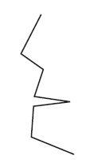
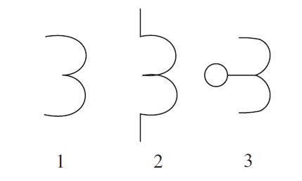

Беседа 1048 от 3877 · Беинса Дуно
Човешкият дух
Седма лекция от Учителя, държана пред Общия окултен клас на 3 ноември 1926 г., София
„Верен, истинен, чист и благ всякога бъди!"
Размишление
За следния път пишете нещо за цветовете на дъгата.
Сега ще ви задам следния въпрос: Защо човек трябва да учи? Мнозина казват, че науката напътва човека в живота. Право ли е това? Ако се качите на един автомобил, можете ли да кажете, че той ви напътва? Колкото автомобилът напътва човека, толкова и науката го напътва. Какво представя всъщност науката? По този въпрос има две мнения: едното мнение е, че без наука не може; другото мнение е, че без наука може. Значи и с автомобил може, и без автомобил може. Науката е произведение на човешкия дух, а човешкият дух седи над всички науки. От хиляди векове насам човешкият дух е създавал и продължава да създава науките. Едни от тях са изчезнали, а други и досега продължават да съществуват И съвременната наука един ден ще изчезне; от нея ще остане само най-ценното, а всичко друго, което е служило като забавление за малките деца, ще се забрави, ще се заличи. Мислите ли, че един ангел може да се занимава със съвременна математика и със съвременно счетоводство? Мислите ли, че един ангел може да се занимава със законодателство, по което се управляват съвременните общества и народи? Мислите ли, че в бъдещето съвременната физика и химия ще се намират в същото положение, в каквото са днес?
Сега, като говоря по този начин, мнозина мислят, че аз отричам науката или че не признавам учените хора. Нито науката отричам, нито учените, но казвам, че всички учени хора са черпили познания от източник, по-висок от тях, и то всеки се е домогвал до тези знания според степента на своето развитие. В този смисъл аз не признавам учени, които черпят своята наука от земята. Кант беше учен, но отде черпеше знанията си? Пророците отде черпеха знанията си? Тъй че когато някой мисли, че знае много неща, това значи, че преди това той е бил невежа. И преди да е свършил университет, човек все е знаел нещо. И след като свърши, пак знае нещо. Важно е човек да не се заблуждава, да мисли, че като свърши университет, всичко знае. Колкото да учи, човек все остава невежа по отношение на това, което се разкрива пред него. Ученият знае, че земята се върти около своята ос, но как именно се върти, той не може да докаже. Ученият знае, че земята се е отклонила на 23° от оста си, но как е станало това отклонение, не може да докаже. Следователно ученият трябва да бъде като художника. Щом нарисува една картина, той сам трябва да знае вярна ли е картината му, има ли дефекти, добре ли представя природата и т. н. Ученият трябва да бъде първият критик на себе си. Всяко нещо, което знае, той трябва да докаже, да го обоснове. Това е знание. Когато музикантът свири, той трябва да изразява нещата, както са. Ако свири нещо от Бетховена, той трябва да го изпълни както самият Бетховен. Всеки трябва да прилича на себе си. Ако представяте Бетховена, така трябва да го изразите, че той сам да се познае.
Обаче много хора, като приличат на себе си, искат и другите да бъдат като тях. Няма по-голямо нещастие за хората от това да мязат едни на други. Природата обича разнообразието. Докато всеки човек представя особен екземпляр, той е ценен; щом се явят два еднакви екземпляра, цената им се намалява. Казвате, че в света има безброй учени хора. Не, в света има само един учен човек – космическият. Всички останали учени са негови секретари, които ходят тук-там, събират материал, какво казал този или онзи учен и го разгласяват. За пример може ли съвременната наука да обясни произхода на живота и да създаде човека? Знае ли тя онзи елемент, който създава безсмъртието? Съвременната наука обяснява нещата все от гледище на физическите закони. Вън от тях тя нищо не може да докаже. Питам: Други закони освен физическите не съществуват ли? Освен физическите закони има и други, които учените не са открили. Това, което учените наричат закон, е проявяване само на истинския закон. В абсолютния закон няма никакви изключения. Закон, в който има изключения, не е истински закон. В законите на живата природа няма никакви изключения. Следователно, кажете ли за нещо, че е закон, в този закон не трябва да има изключения. Щом има изключения, той е правило.
Казват, че логиката изучава законите за правилното мислене. Ако в мисълта на човека има изключения, какви са тези закони? Какво ще се каже тогава за отрицателните мисли на хората, върху които се съгражда живот само на страдания и разочарования? Какво ще кажете за любовта на съвременните хора? На какви закони почива тя? С това не искам да разрушавам идеалите ви, но искам да ви извадя от заблужденията в живота. За пример някой седи пред една стена и казва: „Зад тази стена няма нищо." Не, зад тази стена се крият много неща, които ти не виждаш. Ако ти не виждаш нищо, това още не значи, че наистина нищо друго не съществува.
Следователно положението, до което е дошла съвременната наука, е само въведение към истинската наука. С това авторитетът на учените не се подценява. Напротив съвременните учени имат цена и то толкова по-голяма, колкото по-близо седят до истината. Всяка теория е ценна дотолкова, доколкото тя съдържа истината в себе си. И музиката, и художеството трябва да съдържат истината в себе си. Всяко нещо, върху което работим, трябва да съдържа истина. Всяка мисъл, всяко чувство, всяка постъпка на човека трябва да съдържа истината в себе си. Истината е същественото в живота, към което трябва да се стремите. Ако турите истината като основа на своя живот, всички недоразумения между вас ще изчезнат. В отношенията на хората липсват допирни точки. Защо? -Защото всеки живее в специален център на мозъка си и вън от него не излиза: един живее в центъра на своите лични чувства, друг – в своите религиозни чувства, трети – в обществените чувства и т. н. Всеки от вас за пример знае ли в кой център на главата си живее? Знаете ли коя станция на мозъка ви е отворена? Слушате някоя хубава сказка или беседа, но в това време ви занимават други въпроси; други желания се събуждат у вас. Някой казва: „Дано по-скоро свърши сказчикът, че да отида на концерт." Друг казва: „Дано по-скоро се освободя, че ме чака важно търговско предприятие." Това показва, че интересите на човешкия дух са различни. Какво се ползува духът от музиката, от религията или от науката във всичките им области? Кой кого учи: духът се учи от музиката или музиката се развива от духа? Цигулката ли учи цигуларя или цигуларят развива цигулката? Цигуларят учи цигулката да свири, но не обратното. Следователно човешкият дух учи човека на всичко.
Някой извърши едно дело и после казва: „Аз постъпих според природата си, другояче не мога да постъпя." Друг казва: „Аз трябва да лягам рано. Само по този начин мога да почивам." Питам: Право ли е това? Истинската почивка не се постига с много спане. Когато човек иска да почине, той трябва да освободи ума си от всички непотребни мисли, сърцето си – от всички непотребни тягостни чувства и желания. Те изчерпват енергията на човека, без да му дадат нещо. За да почине, художникът трябва временно да изхвърли всички бои от ума си. За да почине, ученикът трябва временно да изхвърли всички книги от ума си. Докато приеме необходимата енергия от природата, умът на човка трябва да бъде съвършено свободен от всички външни пособия. Щом приеме нужната енергия, той може вече да вземе пособията си и отново да започне работата си. Като знаете това правило, трябва да бъдете внимателни както към себе си, така и към другите. Никога не се налагайте със своето мнение върху приятелите си, да не ги обремените, нито се оставайте други да ви обременяват. Пазете се от пресищане. Човек може да се пресити от музика, от наука, от религия. Няма по-опасно нещо за човека от пресищането. Човек може да се пресити и от живота. И тогава той започва да мисли за самоубийство. За да не се преситите от живота, не желайте всичко да опитате, не желайте всичко да знаете. Някой казва: „Аз зная всичко." Онези хора, които знаеха всичко, днес са заровени в земята. Учените слязоха долу, в земята, а невежите останаха горе да учат. Учените създадоха световете. Вярно ли е това? Туй е теория, която се нуждае от доказателства. И да се докаже, всеки ще запита: „Кой е присъствувал при създаването на световете, че да знае, как е станало това?"
Казвам: Истината не се нуждае от доказателства или от демонстрации. Някой човек е тъжен, скърбен, отчаян. Как ще докажете това? Ако можете моментално да смените състоянието му, това е истинска наука. Едно е важно за човека: сърцето, умът, волята, душата и духът му да бъдат съвършено свободни, т. е. да могат всеки момент да се проявят. Правата мисъл може да се прояви само при свобода. Вън от свободата тя не се изявява. Когато умът, сърцето и волята на човека се проявяват правилно, той има ценни придобивки. Тия придобивки се складират в душата. Тя е съкровищница на човешкия дух. Тя носи в себе си всичко онова, което човешкият дух е придобил от незапомнени времена до днес. В този смисъл казваме, че нищо в живота не се губи. Богатството, което човешкият дух е придобил, е скрито в душата му, и един ден, когато потрябва, то ще се даде като дар, като наследство на онзи, който го е изработил. Един ден това знание, това богатство ще бъде достояние на всички души. Ще дойде ден, когато и невежите, без да са работили, ще имат на разположение науката на миналото. Не става ли това и днес? Вземете една плоча, турите я на грамофона, завъртите ключа и слушате речта на някой учен. Той не съществува вече на земята, заминал е за онзи свят, но преподава, развива, обяснява своите формули. Може ли при това положение да наречете плочата учена? Колкото плочата е учена, толкова учен може да бъде и онзи автомат, който механически решава най-трудните задачи. Може ли да се нарече учен човек онзи, който от създаването на света до днес е изчислил, колко хора са се родили и колко са умрели? Учен е той, но какво ще допринесе неговата ученост за човечеството? След него ще дойде друг учен, ще изнесе причините за умиранията, ще доказва на хората как трябва да се изменят условията, за да се намали смъртността. Добро е всичко това, но то е само теория. Кой от тия учени ще бъде най-авторитетен? Ако тези учени дойдат при вас и чрез изчисления ви покажат какви страдания ще минете през живота си, при какви условия ще ви сполетят, как можете да ги избегнете, вие ще се замислите малко. В края на краищата ще кажете, че това е теория. Обаче натъкнете ли се на страданията, вие започвате сериозно да мислите. Значи истинският авторитет за вас е животът.
Казвате: Айнщайн е учен човек, Дарвин, Кант също така са учени, понеже внесоха нещо ново в света. Айнщайн е някъде в Германия, Дарвин – в Англия, Кант – в Германия, обаче всеки човек включва в себе си и Айнщайна, и Дарвина, и Канта. Всички хора живеят във вас. Цялото човечество се съдържа в един човек и всеки човек е в цялото човечество. Като кажете ябълчна семка, вие разбирате зародишите на всички ябълки. Една ябълчна семка съдържа в себе си разнообразието на всички ябълки. За да се разбере тази идея, човек трябва да разглежда живота като нещо цяло. За тази цел той трябва да се проникне от онази непреодолима вътрешна любов към знанието, към истината. Духът подтиква човешката душа към знание. Слушали сте да казват: „Копнее ми душата." Духът подтиква ума към пластичност, към просветление, а сърцето – към облагородяване.
Защо е нужна наука на човека? – Науката развива дарбите и способностите. Тя разработва, оформява главата на човека. Като погледнете челото, черепа на човека, ще познаете с кои области от науката най-много се е занимавал. Ако духът на някой човек не намери условия да се прояви, главата му постепенно започва да се деформира, носът му се изкривява. Като наблюдавате хората, ще видите, че всеки от тях все има някакъв дефект: на едного очите са изкривени; на другиго – носът е крив, ноздрите сплеснати; на трети – веждите са неправилни; на четвърти – лицето е асиметрично. Добре е от време на време да се оглеждате, да видите какъв дефект имате на лицето или на главата си и да работите за неговото изправяне. Ако човек не се огледа да види дефектите си, той ще мисли, че е безпогрешен, че е абсолютно добър. Добър човек в пълния смисъл на думата е онзи, който няма никакъв дефект нито във физическо, нито в умствено, нито в сърдечно отношение. Физически той трябва да бъде здрав, но не пълен, дебел. Пълнотата още не показва здраве. Кръстът, или талията на човека по мярка трябва да бъде два пъти по-дебела от врата; вратът трябва да бъде два пъти по-дебел от ръката. Ако мерките на кръста и на врата на даден човек са по-големи от определените, значи има известна анормалност в него.
Като говоря за положителна наука, аз я сравнявам с музиката. Математиката, физиката, химията са музикални изрази. Механиката например се занимава с движението на телата, със силите. Значи тя се занимава с живи тела. Само живите тела се движат. Движението не е механически процес. Само разумните тела се движат; само разумните тела биват тъмни и светли; само разумните тела биват твърди, течни и въздухообразни. Енергиите, силите пък са достояние на човешкия дух. Когато човешкият дух иска да направи сянка, да се освободи от вибрациите на светлината, той сгъстява материята около себе си. Следователно той е в сила да сгъстява и разредява материята. В това отношение земята представя образец на твърда, гъста материя, а слънцето – на рядка материя. Слънцето е светещо тяло, а земята – тъмно. Може би след милиони години и земята ще свети като слънцето. Някога и тя е била светещо тяло, но е изгубила светлината си. Една българска поговорка казва: „Дето е текла вода, там пак ще тече." И човек минава през състояния на тъмнина и светлина. Някога той свети като слънцето, а някога е тъмен като земята. Това са състояния, през които човек минава, за да научи нещо. Тъй щото човек ще се качва в рая, ще слиза и в ада. Като слезе в ада, той казва: „Страшно нещо е адът!" Казвам: Страшно нещо е адът, когато човек не знае, отде да излезе. Иначе може ли да излезе сам от ада, нищо страшно няма там. Ако човек попадне между жителите на слънцето, без да разбира езика и реда им, без да е готов за тяхната култура, а при това не може да слезе на земята, той и там ще бъде нещастен. Мнозина мислят, че ако отидат в рая, ще ги посрещнат с музика и песни, с угощения. Да, ако са готови за това, ако съзнанието им е пробудено, така ще бъде. Ако съзнанието им не е будно, и в рая, и в ада да са, все е страшно. Христос казва: „Голяма е радостта на небето за грешника, който се разкайва за греховете си, който се обръща към Бога и прилага Любовта, Мъдростта и Истината."
И тъй, ако искате да се ползувате от знанието, което сте придобили, трябва да го прилагате. Каквото знание придобиете, каквато книга прочетете, приложете поне най-малкото от нея. Ако прочетете една книга, без да приложите нещо от нея, по-добре да не сте я чели. Същото се отнася и до Библията. Малко четете от нея, но прилагайте. Казвате: „Как можем да познаем коя книга трябва да четем?" Ще ви дам следното правило: вземете книгата, която искате да четете, турете я пред челото си, отправете мисълта си към разумния свят и запитайте Божественото в себе си да я прочетете или не. След това останете спокойни за една-две минути и ще чуете един тих глас отвътре ви отговаря да четете книгата или не. Слушайте този глас! Той никога не лъже. Човек трябва да знае какво да чете. Това четиво, което е полезно за едного, не е полезно за другиго. Има смисъл да се чете една книга само тогава, когато тя дава храна за ума, сърцето, волята, душата и духа на човека. Когато човек чете по този начин и се съветва със своя вътрешен глас, той ще развие в себе си интуицията, чрез която ще познава соковете, които текат в живота и оттам ще задържа за себе си полезните, а ще се предпазва от отровните. Вие трябва да се предпазвате от отровните сокове на книгите. Четете някоя философска книга или някой роман и цяла нощ не можете да спите.Казвате: „Тази книга съвсем размъти ума ми!" Значи човек всякога трябва да бъде буден. Чете нещо или говори с някого, той всичко трябва да поставя на критика, на вътрешна анализа.
Материалистите казват: „Всичко в света е материя." Следователно друг свят освен материалния не съществува. Значи и Бог не съществува. И едното, и другото твърдение представят външната страна на живота. Като говорите за материалния свят като единствен свят, тогава и Бог ще бъде за вас материален. Всичко, което е извън вас, е материално; всичко, което е вътре във вас, е духовно. Следователно външното е отражение на вътрешното. Когато човек говори за душата си, а живее изключително във времето и пространството, това показва, че той още не се е въплътил напълно, все още му липсва нещо. Вследствие на това човек още не е господар на положението си. Трябва да минат хиляди години още, докато душата на човека остане завинаги да живее в неговото тяло. Това означава истинско въплътяване. Тогава човек става господар на положението си, той става светия. Засега човек е в положението на растение, не е пуснал дълбоко корени в окръжаващата среда, вследствие на което няма условия за дълъг живот. И при това положение хората казват: „Ние имаме свободна воля, това ще направим, онова ще направим." Да, съвременните хора са толкова силни, толкова умни, че още на 60-годишната си възраст те губят силите си, губят знанията си и казват: „Едно време бяхме даровити, способни, имахме знания, но старини ни налегнаха и всичко изгубихме." Питам: Как е възможно това? Значи, като остарее човек, мисълта му изчезва. Ако започне да мисли, филмът му се измества, не може да се появи на платното.
Казвам: Ако човек иска да запази и на старини знанието, способностите, богатството си, които е придобил на млади години, той трябва да е живял съвършено чист вътрешен живот. Без чистота човешкия дух не може да се прояви в силата си, не може да запази богатството, което е придобил на младини. Човек много пъти ще изучава едни и същи неща, ще ги забравя, отново ще ги изучава, докато най-после те станат в него втора природа. Истинско знание е това, което никога не се заличава от съзнанието на човека. Според теорията на прераждането вие сте дохождали много пъти на земята и в някое от своите прераждания може да сте били виден адепт в Индия, да сте имали последователи, да сте учили хората на великото знание, а днес нищо не помните. Защо? – Отклонили сте се от правия път, вследствие на което всичко сте изгубили. Сега трябва отново да работите, да придобиете старото си знание. Някои разправят, че Ледбитер, водител на теософите, в някогашното си минало е бил пророк Амос. Ледбитер сам се чуди как е забравил всичко от миналото си знание. Днес той е лишен от пророчеството на Амоса, който е бил прост говедар: малко нещо знаел, но всичко това е знаел добре и го е прилагал. Амос предсказвал много неща, а Ледбитер едва запазил от миналото си разположението към духовен живот. Следователно, ако човек не иска да регресира, а желае да запази знанието си, той трябва да живее абсолютно чист живот. Само при такъв живот човек може да запази знанието си, да даде простор на духа си и да работи в съгласие със законите на живата природа. Съвременните хора мислят, че много знаят. Те не трябва да забравят, че са проводници на Божественото знание. Докато държат връзка с Бога, те могат да бъдат носители на Неговите мисли. Щом прекъснат връзката си с Него, и знанието им ще се прекрати. При това, каквото знание придобият, те трябва да го обработят в себе си и част от него да дадат на другите.
И тъй няма по-красиво състояние за човека от това да има добро разположение на духа си, да има онази детска възприемчивост, да се ползува от всичко, което слуша. При това той трябва да бъде свободен да изказва мнението си, като счита, че всички хора знаят поне колкото него.

Сега ще напиша числото 111, което е съставено от три единици, т. е. от три прави линии. Като разглеждате този профил, виждате, че и той е образуван от прави линии, на брой седем: 1111111. Значи имаме числото 1 111 111. Този профил струва ли един милион? Представете си, че тия единици са силови линии, от които може да създадете цял образ и да придвижите света напред. Обаче, за да поставите тия сили на мястото им, изисква се знание. В тези линии се крие цяла наука. Когато се говори за единицата, за двойката, за тройката и за другите числа, трябва да се знае де се намира всяко от тях по лицето и по тялото на човека. Единицата например е поставена на носа; тройката – на веждите (1); петте – на пръстите. Тройката е поставена още и на човешката уста, разгледана в профил (2). Устата представя халка,

която ни свързва със земята посредством въже, което постоянно влиза и излиза, пренася храната (3). Котвата пък представя очите, свързани с носа и устата като халка. Устата ни спасява от трудните положения в живота. Ако халката се скъса, сама за себе си котвата нищо не струва. Въжето представя вярата в човека, че винаги ще има храна да поддържа организма си. Храната представя живите сили, които влизат в устата и после излизат навън.Устата извършва няколко функции: първо, в нея влиза храна, която се сдъвква от зъбите; после през нея влиза въздух за дробовете. И най-после устата говори, произнася се за всичко, което е опитала.
Питам: Коя е основната мисъл в тази лекция? (- Човешкият дух като автор на всички неща на земята.) Щом човешкият дух е автор на всички неща, които виждате по лицето на земята, трябва ли да се кланяте на това, което той е създал? Затова и в Писанието е казано: „Да не се кланяш на никакъв идол нито на земята, нито на небето." Като казвам, че човешкият дух е създал всичко, аз го разглеждам в неговата първоначална сила и чистота. Човек трябва да се стреми към това състояние на духа си, да възстанови неговата сила и чистота, като постепенно се освобождава от заблужденията на своето минало. Щом човешкият дух през времето на своя живот е създал и доброто, и злото, той може да ги използува, да бъде господар и на едното, и на другото. Казвате: „Ами тогава де остава волята Божия?" Казвам: Духът на човека винаги изразява волята Божия. Той върши това, което от Бога е научил. Той е разумното начало в живота на човека. Следователно да вършим волята Божия, това е проява на разумното в нас. Да се противим на волята Божия, това значи да изразим нашата воля. Когато човек се противопоставя на Божията воля, той се изявява негативно. В това отношение хора, които минават за волеви натури, са изложени на повече страдания от онези, които нямат своя воля, а изпълняват Божията воля. Такива хора минават за безволни. Според мене пък безволните хора именно са разумни. Казват за такъв човек: „Голям глупец е този, ще го набия." Питам: Кой учител, като е бил и наказвал учениците си, е имал тяхното уважение? Кой баща, като е теглил ушите на децата си, е имал тяхното уважение? И след всичко това казват, че пръчката е излязла от рая. За каква пръчка се говори? Преди всичко пръчки в рая нямаше. Защо? – Защото там всички пръчки бяха живи и не позволяваха да ги режат. Тъй щото, като се говори за пръчката в рая, тя символизира Божията Правда. Значи Правдата е излязла от рая, за да управлява хората. Който знае отношенията между фактите и явленията в света, той разполага с тази пръчка. Магическа пръчка е тя!
Казвам: Стремете се всички да уредите своя вътрешен живот. Говорете малко, мислете много! Тревожете се малко, работете много! Когато мисълта се придружава с тревоги, тя се осакатява. Както халките в една верига вървят непрекъснато една след друга, така и мисълта трябва да върви гладко, непреривно. Всяка тревога внася прекъсване на мисълта. Ако се извади само една халка от веригата, последната постепенно почва да се разпада. Следователно, когато и от мисълта се извади само една халка, тя губи своята непреривност и се превръща в механическо действие или мислене по калъп. Правата мисъл винаги се придружава с радост и човек се чувствува господар на положението си. Като мислят, много хора хващат главата си, разтърсват я, движат се, сядат, но това не е права мисъл. Някой поет сяда да пише, но не му върви. Хваща главата си, почесва се, става, сяда, движи се, докато най-после се обезсърчи и каже: „Поет от мене не може да стане!" Щом каже така, Божественото в него се събужда и му нашепва: „Седни и пиши! От тебе поет сега именно може да стане, защото призна в себе си, че не си ти, който можеш да направиш нещо." Този поет веднага се вдъхновява и започва да пише. Значи духът диктува на поета какво да пише и после му казва: „Хайде, сега вече можеш да се подпишеш вместо мене."
Същото става и с учените хора. Някой учен иска да пише по даден въпрос, но не може. Става, сяда, движи се, докато най-после каже: „От мене учен човек не може да стане!" Щом каже така, духът го подкрепва и казва: „Седни да пишеш! Ще пишеш, каквото ти казвам, и ще видиш, че учен човек ще станеш. Хайде, подпиши се сега." За тези случаи англичаните имат следното изречение: Погрешките и неуспехите на хората са благоприятни случаи за проява на Бога. С други думи казано, там, дето човек скъсва, Бог започва. Бог никога не оставя душата да пропадне. Дойде ли човек до пълно обезсърчение и отчаяние, Той му казва: „Започни да работиш! Аз ще бъда с тебе и ще ти помагам. Ти ще се проявиш, ще постигнеш своите копнежи."
Следователно всеки човек трябва да знае, че има дух в себе си, автор на всичко онова, което той счита невъзможно. Духът на хората е ценен в това отношение, че той ги свързва с Бога. Той е автор на всички неща на земята, заради което хората трябва да го слушат. Щом слушат духа си, те ще слушат и Бога, понеже духът е изпълнител на волята Божия.
Имайте високо мнение за духа си като велик автор, като авторитет, като тълкувател и изпълнител на волята Божия.
„Верен, истинен, чист и благ всякога бъди!"
Начало: 19:00